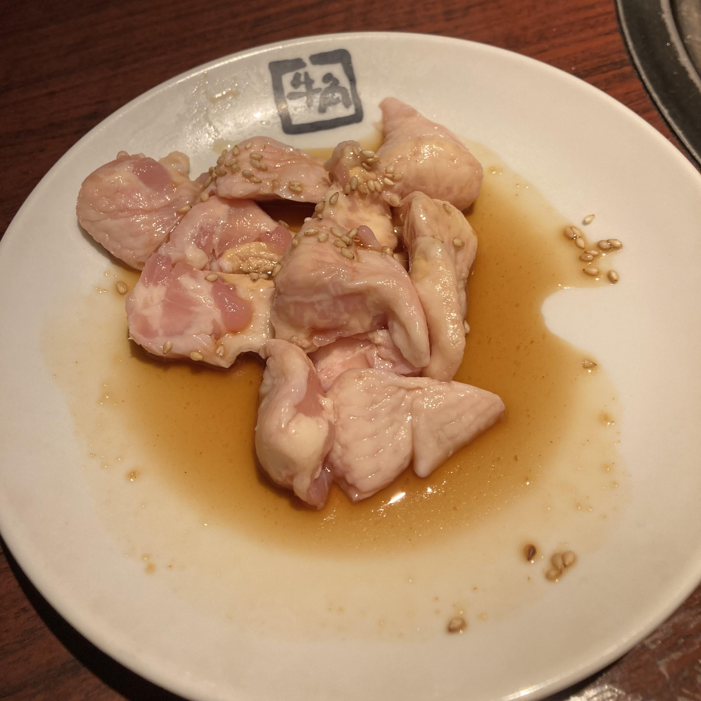
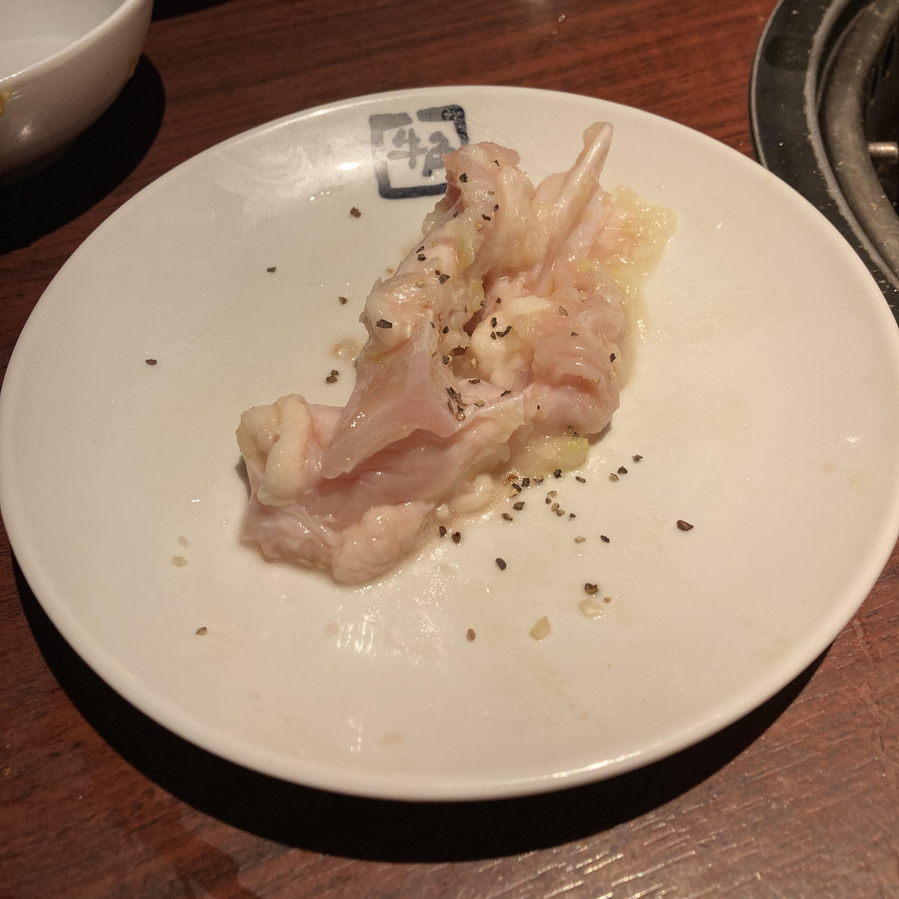
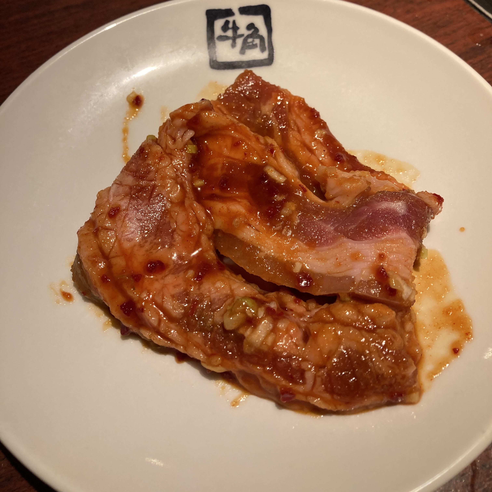
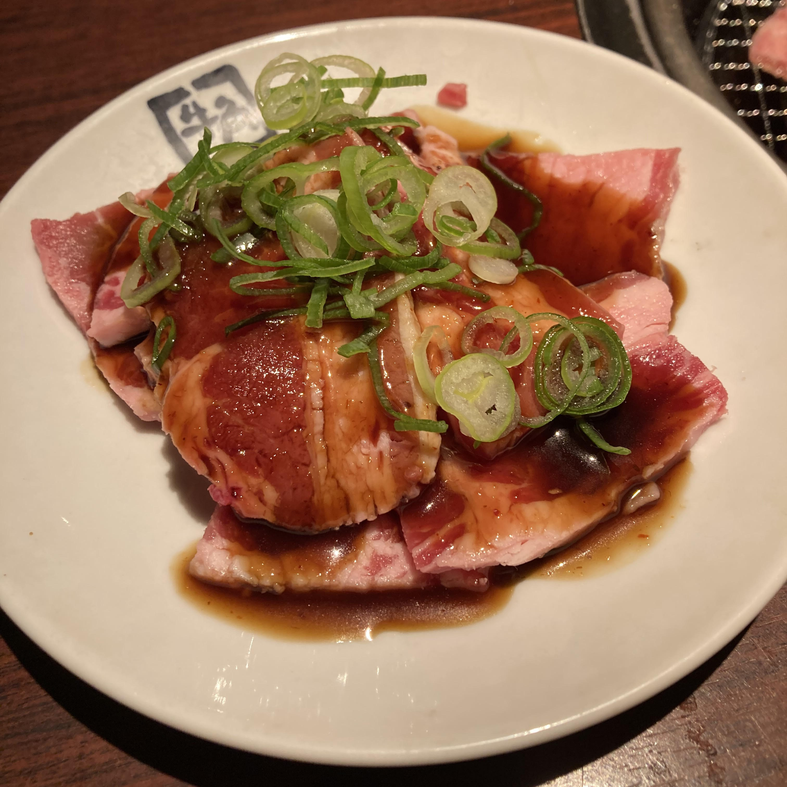
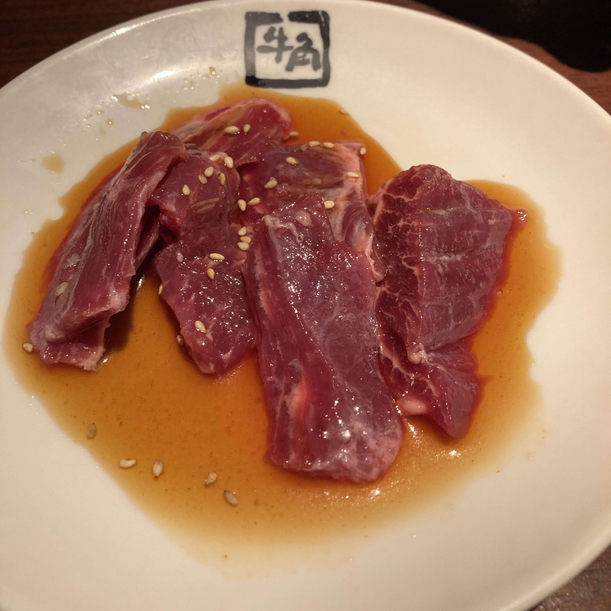
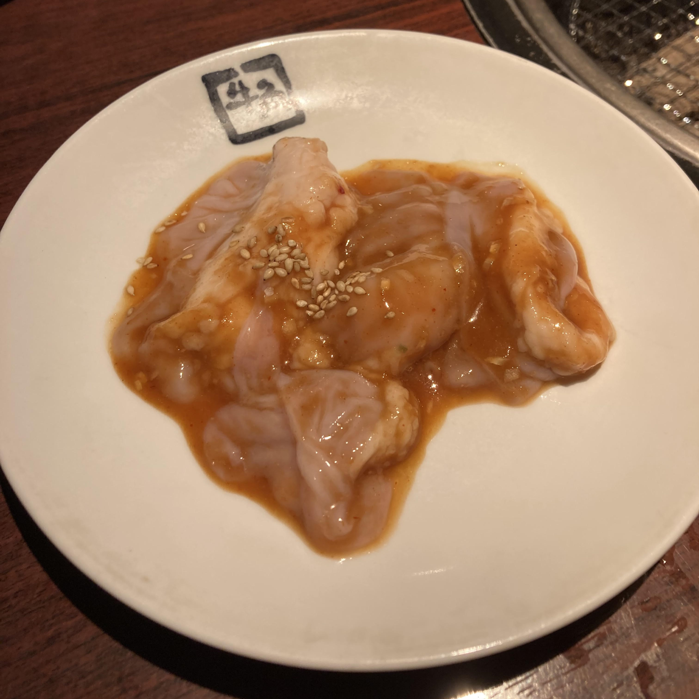
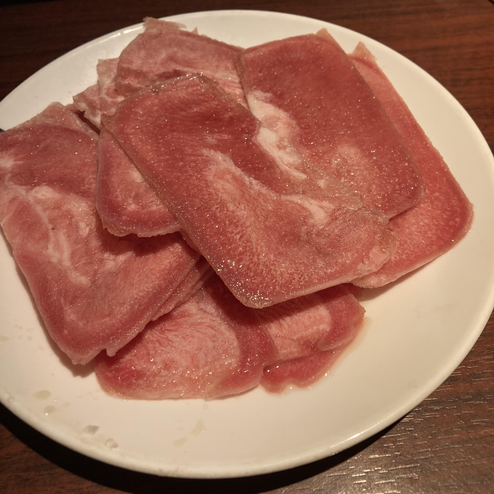

メニュー 鶏肉  とりもも お子様にも人気。やわらかくてジューシー  ハラミ付きヤゲン ジューシーなハラミがついた、コリコリの軟骨 牛肉  工大カルビ 骨と骨の間の旨味の詰まった部位を丁寧にカット  カルビ 牛肉のうまみ、甘味と香りが楽しめます。最も人気のある定番メニューのひとつ。  ハラミ 国民のアイドル！お店一押し 豚肉  やみつき豚ホルモン この食感クセになる  トンタン塩 コリコリ食感を楽しむ。牛タンでなくても満足できます。